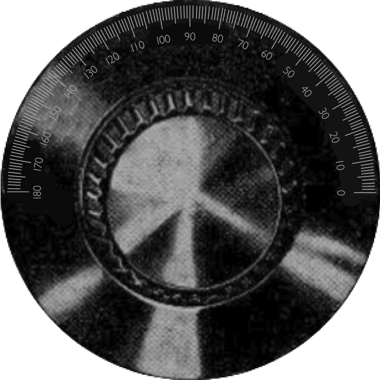

November — 1925
Strange sounds from foreign lands arrive on Britain’s shores, carried upon
The Ether Ocean
November 1925
Strange sounds from afar arrive on Britain’s shores, carried upon the
Ether Ocean
Tune In
Loading...

Cabinet Effects Debug
Enable High-Pass Filter
Enable Low-Pass Filter
Enable Reverb
Enable Tube Effects
Enable Cabinet Effects
Hide Debug